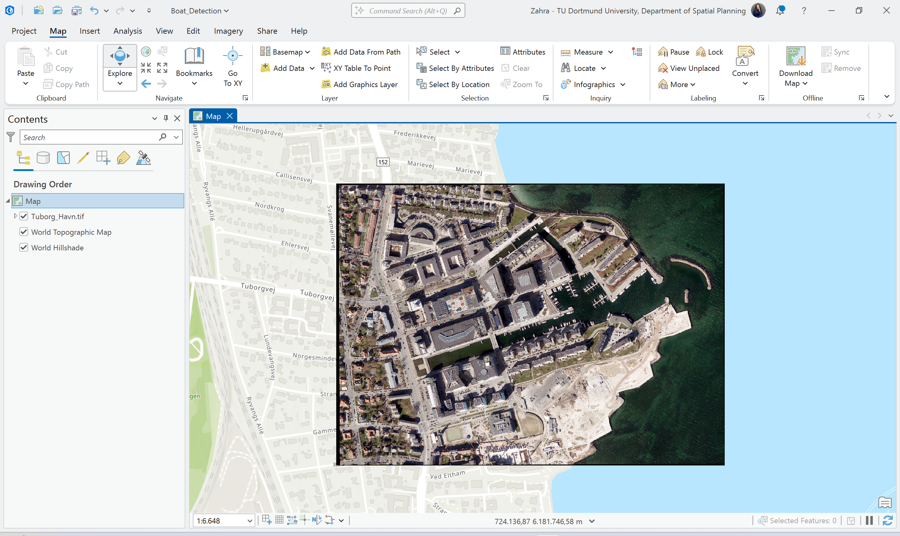
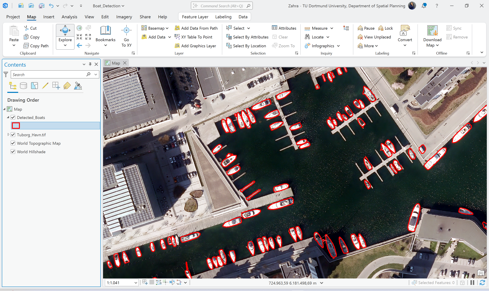

More than raw inference
This project shows that pretrained detection output was reviewed critically rather than accepted as final. That is important because usable GeoAI workflows often depend on refinement after inference.
This project focused on prompt-based object detection in high-resolution aerial imagery using the TextSAM model in ArcGIS Pro. The workflow did not stop at raw inference: it included parameter-aware review, duplicate suppression, and filtering of small false-positive polygons to produce a cleaner GIS-ready output.
From a recruiter or GIS analyst perspective, the main value of this project is not simply that the model detected boats. The stronger signal is that the workflow included interpretation of detection quality, review of model behavior, and post-processing decisions that turned raw output into a more usable GIS layer.
This project shows that pretrained detection output was reviewed critically rather than accepted as final. That is important because usable GeoAI workflows often depend on refinement after inference.
The workflow used a text prompt to define the target object and applied the model in a marina environment, making the task different from a fixed-class pretrained detector.
The clearest applied result is the shift from the initial detection output to a refined layer with reduced noise and better visual interpretability.
The skills below are tied directly to the workflow shown on this page. The emphasis is on prompt-driven inference, output review, and post-processing logic.
The workflow below highlights the main technical stages instead of just repeating the tutorial sequence. This makes the process easier to scan quickly.
High-resolution aerial imagery was loaded and reviewed as the visual basis for detecting boats in the marina environment.
The deep learning detection tool was run with the text prompt “boat” to generate the first set of candidate polygons.
The raw output was reviewed and improved through suppression and filtering logic to reduce duplicates, noise, and very small false-positive geometries.
The cleaned result was prepared for interactive presentation in a web app to make the final output easier to inspect and communicate.
These visuals support the main technical stages: source imagery, initial detection output, and refined final result. Each image is included to show transformation in output quality.

The project used prompt-based detection with TextSAM and improved output quality through review of duplicates, confidence behavior, and removal of very small geometries after inference.


The most important analytical change in this project is the transition from raw detection output to a cleaner final result. This shows that post-processing decisions materially improved the usability of the layer.
This view shows the first result produced by the model before additional filtering and cleanup decisions were applied.
This view shows the improved result after removing low-quality detections and refining the output for clearer GIS use.
The web app supports direct visual review of the final boat detection result in a presentation-friendly format. It is included here to make the cleaned output easier to inspect beyond the desktop analysis environment.
This project demonstrates how a prompt-based GeoAI model can be used beyond a simple tutorial run. The main software signals are text-prompt detection, detection-quality review, post-processing, and communication of a refined final output through a web-based interface.